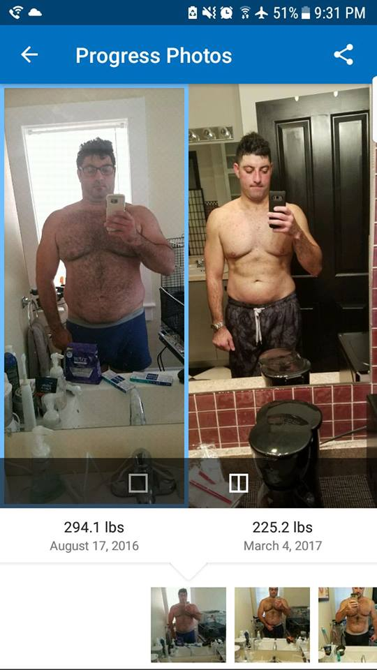

What is a real body?
A real body bears all the scars of dailty life without retouching

What is our mission?
Our mission is to normalize the range of what people are exposed to as far as normal and real bodies. As a society, we are bombarded with glossy but fake photos of supposedly "real" bodies.
We want to strip away these layers and show real, unadulterated bodies.
What was our inspiration?
Having worked in an industry where people are constantly unhappy with their bodies, we decided it was time to get involved. What better way to combat this than to use the same medium that has helped to lead to some of these unhealthy norms to expose what a real body is and can be.